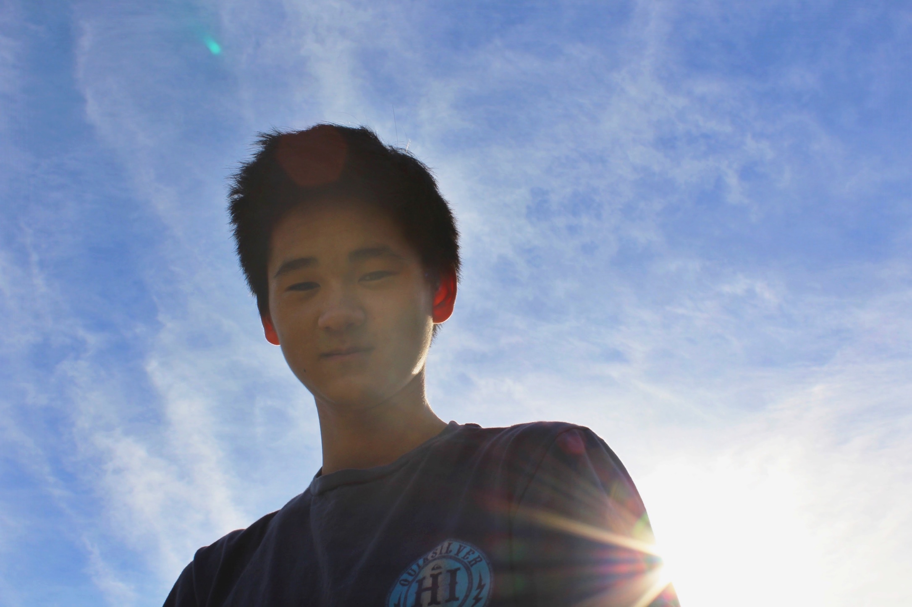

Justin Wei's Website

Welcome to my website! This site was initially built from scratch
to experiment with basic HTML/CSS/JavaScript, but
now it also serves as a landing page for anyone who wants to know more
about me!
Let's start here:
What's your name?
Hello! My name is Justin Wei, and I'm a passionate learner and problem-solver. I currently attend Duke University and am studying Computer Science and Neuroscience. In my free time I enjoy being outdoors, spending time with friends, and in general challenging myself both mentally and physically. I'm extremely interested in advancing the unexplored frontiers of software engineering and neuroscience as well as the intersection of the two. You can find out more about what I'm involved in around campus below!
Though those are the main activities I'm involved in around campus, I also work on some side projects for fun! Check out some of them below:
Feel free to check out more of my projects/code at my Github!
Please reach out if you have any questions or if anything above interests you!